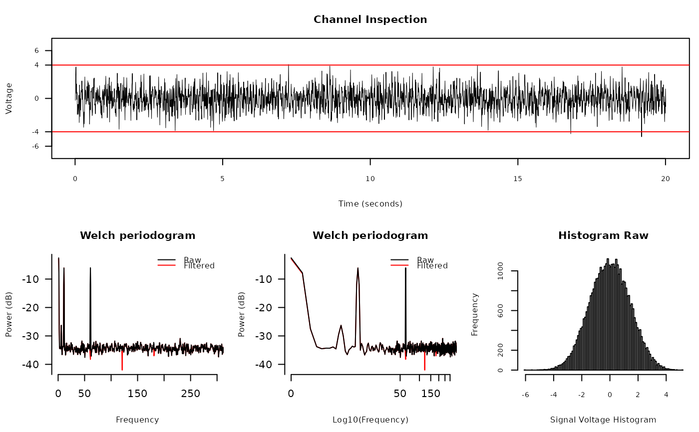

diagnose_channel(
s1,
s2 = NULL,
sc = NULL,
srate,
name = "",
try_compress = TRUE,
max_freq = 300,
window = ceiling(srate * 2),
noverlap = window/2,
std = 3,
which = NULL,
main = "Channel Inspection",
col = c("black", "red"),
cex = 1.2,
cex.lab = 1,
lwd = 0.5,
plim = NULL,
nclass = 100,
start_time = 0,
boundary = NULL,
mar = c(3.1, 4.1, 2.1, 0.8) * (0.25 + cex * 0.75) + 0.1,
mgp = cex * c(2, 0.5, 0),
xaxs = "i",
yaxs = "i",
xline = 1.66 * cex,
yline = 2.66 * cex,
tck = -0.005 * (3 + cex),
...
)the main signal to draw
the comparing signal to draw; usually s1 after some filters;
must be in the same sampling rate with s1; can be NULL
decimated s1 to show if srate is too high; will
be automatically generated if NULL
sampling rate
name of s1, or a vector of two names of s1 and
s2 if s2 is provided
whether try to compress (decimate) s1 if
srate is too high for performance concerns
the maximum frequency to display in 'Welch Periodograms'
see pwelch
the standard deviation of the channel signals used to determine
boundary; default is plus-minus 3 standard deviation
NULL or integer from 1 to 4; if NULL, all plots
will be displayed; otherwise only the subplot will be displayed
the title of the signal plot
colors of s1 and s2
graphical parameters; see
par
the y-axis limit to draw in 'Welch Periodograms'
number of classes to show in histogram
(hist)
the starting time of channel (will only be used to draw signals)
a red boundary to show in channel plot; default is
to be automatically determined by std
distance of axis labels towards ticks
A list of boundary and y-axis limit used to draw the channel
library(ravetools)
# Generate 20 second data at 2000 Hz
time <- seq(0, 20, by = 1 / 2000)
signal <- sin( 120 * pi * time) +
sin(time * 20*pi) +
exp(-time^2) *
cos(time * 10*pi) +
rnorm(length(time))
signal2 <- notch_filter(signal, 2000)
diagnose_channel(signal, signal2, srate = 2000,
name = c("Raw", "Filtered"), cex = 1)
